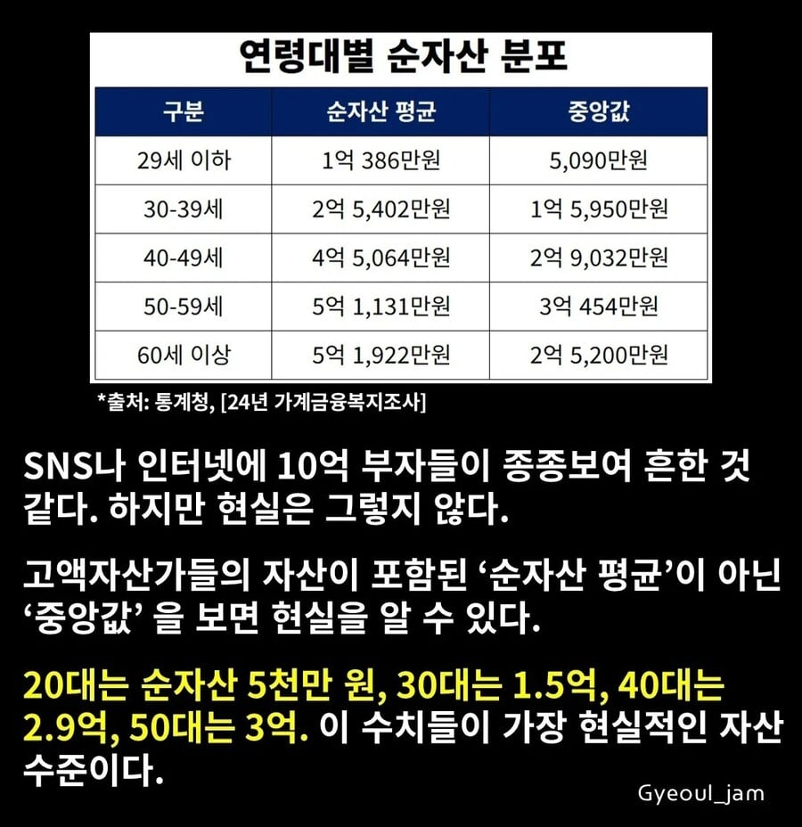
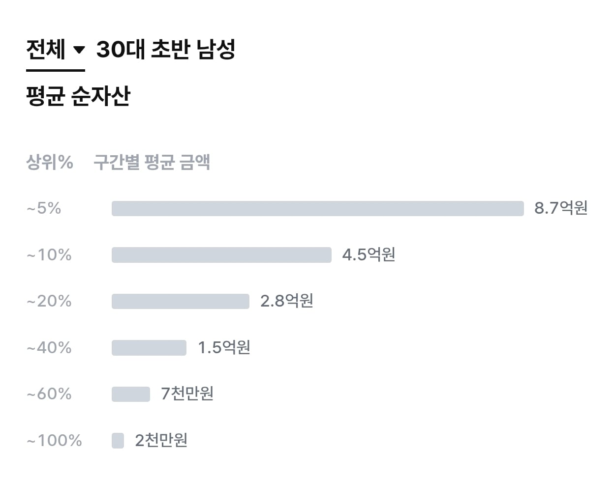

30대 1.5억이 현실적인 수치라고함
sns 부자들에게 속지말자
ps) 30대 초반 후반 차이 크다고해서 30대초반 자료도 가져옴..


30대 1.5억이 현실적인 수치라고함
sns 부자들에게 속지말자
ps) 30대 초반 후반 차이 크다고해서 30대초반 자료도 가져옴..
참 사는게 무슨 게임도 아니고ㅋㅋㅋ 캐릭터마냥 언제쯤이면 무슨 스탯을 찍어야하고 무슨 스킬을 갖춰야하는 것 처럼 생각하는 청춘들 보면 안타까움
4년동안 6천 모았었는데 엄마한테 세금때고 9.5천쯤 받고 대출받아서 집삼
답은 월100씩 qld5년모으자 1억금방임
순자산이 집과 주싣 포함인가,
95년생 이제 1억넘긴듯
마이너스를 향해 가는중
30대 초반 여성은 ?ㅋㅋ
어떤 새끼가 내 4억 가져갓냐
10프로가 4.5억이라고? 개에반데...
아니 자산이 그것밖에 안된다고???
딱 서른 중반인데 내 주변에 5억 이하가 없는데?
개드립 평균은 30초에 5억 이상임
나 30초중반 1n억 있었고 지금 30후인데 유동현금 1억 채 안된다 사업체에 들어가있어서 자산이긴한데 자산 총계내면 30초가 더 많았음
내가 이런 상황이라 그럴 수 있지만 너무 막 얼마 모아야해 이런거 하등 부질 없고 의미없다..
작년까지 부채 가득한 삶을 살던 내 친구 지금 엑싯이야기나와서 회계법인 열심히 출석중이신데 엑싯되면 수백억 자산가 됨..
직장인이도 뭐.. 우리 아부지 40초때 집한채 달랑 있으셨는데 40중후 때 강남역 꼬마빌딩 하나 살만큼 현금이 있으셨음.. 물론 지금은 거주하시는 집+차+작은 시골농지가 끝이심